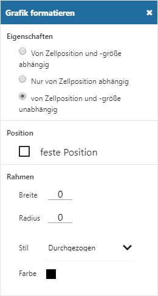
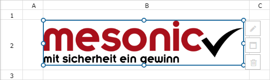
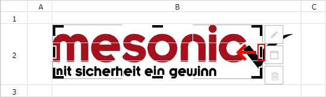

Ø Bild einfügen
Durch Anwahl des Buttons "Bild einfügen" kann eine Grafik in das CalcSheet eingefügt werden, wobei dieses im ersten Schritt mit einer Standardbreite von 400px geschieht.
Einstellungsfenster "Grafik formatieren"

Der Bereich "Grafik formatieren" wird bei Anwahl einer Grafik automatisch geöffnet. Dort können folgende Einstellungen und Parameter hinterlegt werden:
Ø Eigenschaften
Über den Bereich "Eigenschaften" kann das Verhalten der Grafik in Bezug auf Zellenveränderung definiert werden:
ü Von Zellposition und -größe
abhängig
Die Grafik ist an die Zellposition und die Zellgröße geknüpft. D.h.
sie bewegt sich mit der Zelle und verändert ihre Größe entsprechend, wenn die
Größe der Zelle geändert wird.
ü Nur von Zellposition
abhängig
Die Grafik ist an die Zellenposition gebunden. Änderungen der
Zellgröße beeinflussen die Grafik nicht.
ü Von Zellposition und -größe
unabhängig
Die Grafik ist an eine bestimmte Position auf dem Tabellenblatt,
nicht aber an eine Zelle gebunden.
Ø feste Position
Durch Aktivierung dieser Option wird die Grafik an jene Stelle positioniert, wo sie original eingefügt wurde.
Ø Rahmen
Über den Bereich "Rahmen" kann die Grafik mit einem Rahmen versehen werden. Hierbei stehen die folgenden Parameter zur Verfügung:
ü Breite
Gibt die Breite des
Rahmens an.
ü Radius
Gibt die Breite des
Radius (der Rundung) an.
ü Stil
Hinterlegung des
Linienstils des Rahmens.
ü Farbe
Definition der
Rahmenfarbe. Durch Anwahl der Farbe wird die Farbauswahl geöffnet.
Grafik

Neben den Einstellungen kann die Grafik per Drag & Drop verschoben bzw. deren Größe verändert werden. Zusätzlich stehen 3 weitere Funktionen zur Verfügung:
Ø Zuschneiden
Durch Anwahl dieses Buttons kann die Grafik zugeschnitten werden. Durch eine nochmalige Anwahl des Buttons wird der Modus des Zuschneidens verlassen.
Beispiel

Ø Originalbild
Mit Hilfe dieses Buttons wird die Grafik auf Originalgröße zurückgestellt. Hierbei werden alle Veränderung rückgängig gemacht:
ü die Verkleinerung auf 400px des Einfügens
ü das Zuschneiden
ü das manuelle Verändern der Bildgröße
Ø Löschen
Durch Anwahl dieses Buttons wird die Grafik aus dem CalcSheet entfernt.